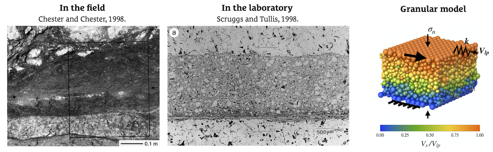
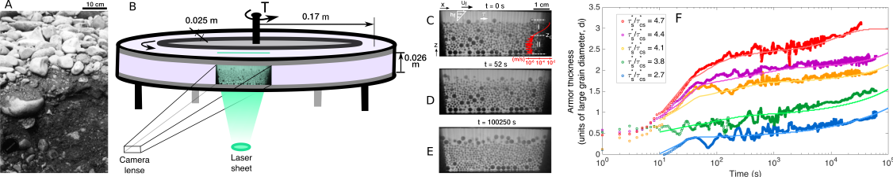
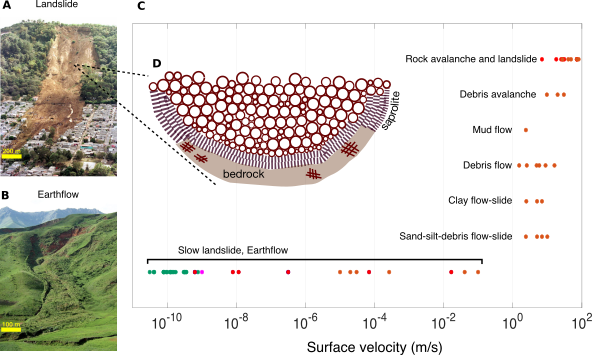
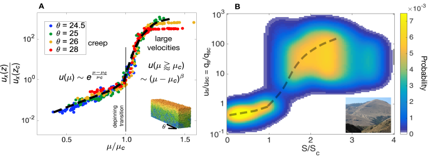

Some of my current and past research
Rate- and state-dependent friction of rock, subglacial till, and other Earth materials
Rate- and State-dependent Friction (RSF) equations are commonly used to describe the time-dependent frictional resistance of Earth materials -- including those in shear localization regions of earthquake fault zones, landslides and earthflows, and unsorted glacial sediment beneath glaciers -- to perturbations in sliding velocity. Among the better-known versions of RSF laws are the Aging and Slip laws for the evolution of state. Although the Slip law is more successful, neither can predict all the robust features of rock and till friction lab data. RSF laws are also empirical, and their micromechanical origin is a matter of much debate. I have been working with Prof. Allan M. Rubin since 2017 (and before then with David L. Goldsby) to explore the extent to which RSF behavior, as observed in rock gouge and till friction experiments, can be explained by the response of a granular gouge layer with time-independent properties at the contact scale. We have so far examined slip histories for which abundant lab data are available, and found that the granular model (1) mimics the Slip law for those loading protocols where the Slip law accurately models laboratory data (velocity-step and slide-hold tests), and (2) deviates from the Slip law under conditions where the Slip law fails to match laboratory data (the reslide portions of slide-hold-slide tests), in the proper sense to better match those data. The simulations also indicate that state is sometimes decoupled from rock gouge and till porosity in a way that is inconsistent with traditional interpretations of "state" in RSF. We also have found that if the "granular temperature" of the gouge is suitably normalized by the confining pressure, it produces an estimate of the direct velocity effect (the RSF parameter a) that is consistent with our simulations, and in the ballpark of lab data.
For more information, please check our paper in Journal of Geophysical Research: Solid Earth.

↑ The left panel shows an ultracataclasite layer (fault gouge) in the Punchbowl fault zone, Devil’s Punchbowl County Park, California. The center panel shows a sheared rock sample, with a gouge layer formed between the less damaged rocks bounding it, in the torsional shear apparatus in the Rock Deformation Laboraotry (Professor Tullis's lab), Brown University. The right panel shows a granular gouge model realized using the discrete element method (with the granular module of
LAMMPS molecular dynamics simulator).
Sediment transport in bimodal and gravel-bedded rivers
Gravel-bedded rivers and rivers with bimodal size distribution of sediments often exhibit "armoring", in which formation of a coarse surface layer shields the finer underlying grains from erosion. In collaboration with Dr. Carlos P. Ortiz, Dr. Morgane Houssais, and with Prof. Doug Jerolmack, I studied the transport of sediments with bimodal grain size distribution to better understand the mechanism of armoring phenomenon. Classical models of sediment transport assume that armor develops due to sorting of surficial grains by the fluid flow. In this research, we showed how motion of grains deep beneath the surface delivers larger grains to the surface. Using experiments and discrete and continuum modeling, we further demonstrated that river-bed armoring is driven by vertical granular segregation and that the fluid has little effect. Results also revealed different segregation mechanisms for deep versus shallow grains, which has broader implications for all manner of granular flows, as well as for a mechanistic understanding of sediment transport and for reading geologic record in natural environment.
For more information, please check our paper in Nature Communications.

↑ Phenomenology and setup. (A) Bed sediment of the River Wharfe, U.K., that shows a pronounced surface armor. Photo courtesy D. Powell [
Powell, 1998]. (B) Sketch of the experiment, showing position of the camera and laser plane used for imaging inside the granular bed. (C-E) Snapshots during armor development for τ
s* = 3.8τ
*cs. Also shown is the fluid boundary stress, which is computed as τ = ηU
f/h
f [
Houssais et al., 2015] where U
f and h
f are the top-plate speed and flow depth, respectively. The red curve shows the long-term-averaged streamwise particle velocity u
x(z), where I and II correspond to the bed load and creep zones, respectively. The directions x and z are indicated. (F) Temporal evolution of the thickness of the armored layer at different Shields number. Legend indicates Shields number associated with each curve. The brighter continuous lines are predictions from a modified version -to account for creep (slow flow) segregation- of
advection-diffusion model Gray and Ancey, [2015],
Gray and Thornton, [2005], commonly used to model size-segregation phenomenon in granular mixing. Note the first rapid stage of armoring, which is dependent on Shields number and is associated with bed-load transport, and the second slower stage that exhibits a nearly constant rate for all Shields numbers and is the result of creep.
Geophysical landscape evolution and landscape dynamics
Soil creeps imperceptibly downhill, but also fails catastrophically to create landslides. Despite the importance of these processes as hazards and in sculpting landscapes, there is no agreed upon model that captures the full range of behavior. In this work, we examined the granular origins of hillslope soil transport by Discrete Element Method simulations, and re-analysis of measurements in natural landscapes. We found creep for slopes below a critical gradient, where average particle velocity (sediment flux) increases exponentially with friction coefficient (gradient). At critical there is a continuous transition to a dense-granular flow rheology, At critical gradient, we found a continuous transition to a dense-granular flow rheology, consistent with previous laboratory experiments and theoretical developments in amorphous (Earth) materials and disordered media Fisher, [1998], Chauve et al., [2000], Dauchot et al., [2005], Reddy et al., [2011], Reichhardt and Reichhardt, [2016]. Slow earthflows and landslides thus exhibit glassy dynamics characteristic of a wide range of disordered materials; they are described by a two-phase flux equation that emerges from grain-scale friction alone. This glassy model reproduces topographic profiles of natural hillslopes, showing its promise for predicting hillslope evolution over geologic timescales.
For more information, please check our paper in Proceedings of the National Academy of Sciences of the United States of America.

↑ Landslide and creep phenomenology: Ranges of surface velocities observed for various types of slow and rapid landslides. The datapoints in red, brown, magenta, and green correspond to the observations reported or documented by
Cruden and Varnes, [1996],
Hungr et al., [2001],
Hilley et al., [2004], and
Saunders and Young, [1983], respectively. The insets show a landslide in San Salvador, El Salvador (photo credit: Associated Press/Wide World Photos), and a slow earthflow in Osh, Kyrgyzstan (photo credit: Joachim Lent).

↑ General flow behavior and the glassy flux model. (A) DEM results showing normalized local downslope velocity ([(ux(z))/(ux(zc))]) as a function of normalized local friction coefficient ([(μ)/(μc)]) for four different inclinations, below and above the bulk angle of repose. (B) Field data of normalized flux qs/qsc - equivalent to normalized velocity us/usc - versus normalized gradient (S/Sc) for five different studies of natural hillslopes. Data cloud color represents the probability of all field observations, that takes into account not only the probability of an observation at a given value of flux-gradient in the collected datasets, but also the number of sites/hillslopes collected and involved in each study. Dashed line illustrates an exponential scaling for creep regime with critical gradient Sc = 0.4 and a power-law scaling for the range of large flux with a power-law exponent β = [5/2]. The chosen values of exponential and power law scaling coefficients are not a fit to the data, because of inherent variability of the observations. They represent a qualitative comparison between expectations from theory, numerical simulations, and the field.
References
- [Chauve et al. 2000]
-
Pascal Chauve, Thierry Giamarchi, and Pierre Le Doussal.
Creep and depinning in disordered media.
Physical Review B, 62 (10): 6241, 2000.
- [Cruden and Varnes 1996]
-
David M Cruden and David J Varnes.
Landslides: investigation and mitigation. chapter 3-landslide types
and processes.
Transportation research board special report, (247),
1996.
- [Dauchot et al. 2005]
-
Olivier Dauchot, Guillaume Marty, and Giulio Biroli.
Dynamical heterogeneity close to the jamming transition in a sheared
granular material.
Physical review letters, 95 (26): 265701,
2005.
- [Fisher 1998]
-
Daniel S Fisher.
Collective transport in random media: from superconductors to
earthquakes.
Physics reports, 301 (1): 113-150, 1998.
- [Gray and Ancey 2015]
-
JMNT Gray and C Ancey.
Particle-size and-density segregation in granular free-surface flows.
Journal of Fluid Mechanics, 779: 622-668, 2015.
- [Gray and Thornton 2005]
-
JMNT Gray and AR Thornton.
A theory for particle size segregation in shallow granular
free-surface flows.
In Proceedings of the Royal Society of London A: Mathematical,
Physical and Engineering Sciences, volume 461, pages 1447-1473. The Royal
Society, 2005.
- [Hilley et al. 2004]
-
George E Hilley, Roland Bürgmann, Alessandro Ferretti, Fabrizio Novali, and
Fabio Rocca.
Dynamics of slow-moving landslides from permanent scatterer analysis.
Science, 304 (5679): 1952-1955, 2004.
- [Houssais et al. 2015]
-
Morgane Houssais, Carlos P Ortiz, Douglas J Durian, and Douglas J Jerolmack.
Onset of sediment transport is a continuous transition driven by
fluid shear and granular creep.
Nature communications, 6, 2015.
- [Hungr et al. 2001]
-
Oldrich Hungr, SG Evans, MJ Bovis, and JN Hutchinson.
A review of the classification of landslides of the flow type.
Environmental & Engineering Geoscience, 7
(3): 221-238, 2001.
- [Powell 1998]
-
D Mark Powell.
Patterns and processes of sediment sorting in gravel-bed rivers.
Progress in Physical Geography, 22 (1):
1-32, 1998.
- [Reddy et al. 2011]
-
KA Reddy, Y Forterre, and O Pouliquen.
Evidence of mechanically activated processes in slow granular flows.
Physical Review Letters, 106 (10): 108301,
2011.
- [Reichhardt and Reichhardt 2016]
-
Charles Reichhardt and CJ Olson Reichhardt.
Depinning and nonequilibrium dynamic phases of particle assemblies
driven over random and ordered substrates: a review.
Reports on Progress in Physics, 80 (2):
026501, 2016.
- [Saunders and Young 1983]
-
Ian Saunders and Anthony Young.
Rates of surface processes on slopes, slope retreat and denudation.
Earth Surface Processes and Landforms, 8
(5): 473-501, 1983.
File translated from
TEX
by
TTH,
version 4.12.
On May 3, 2020, 19:48 EST